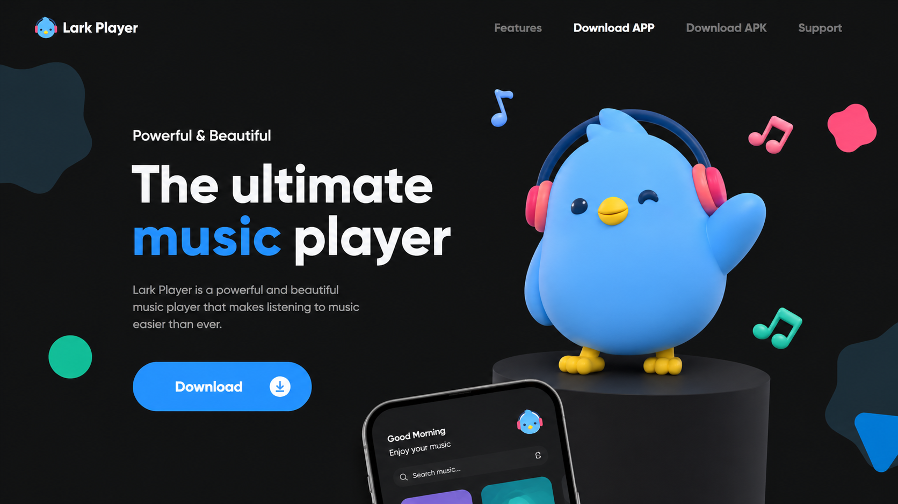
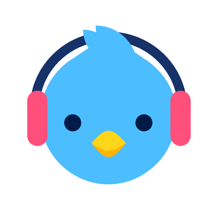
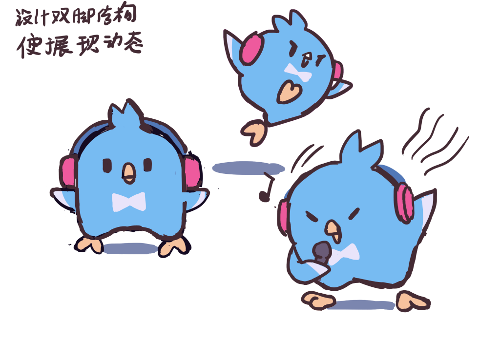
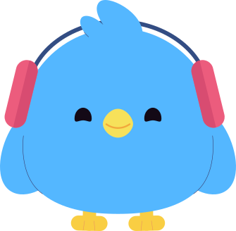
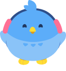
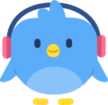
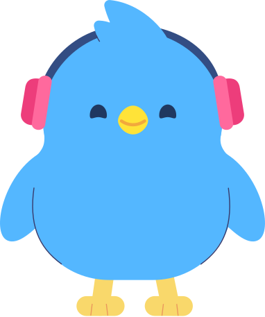
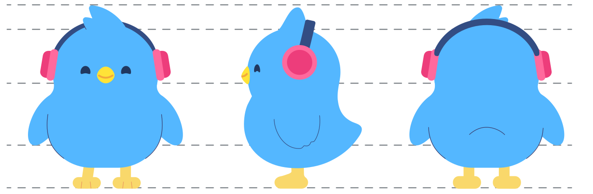
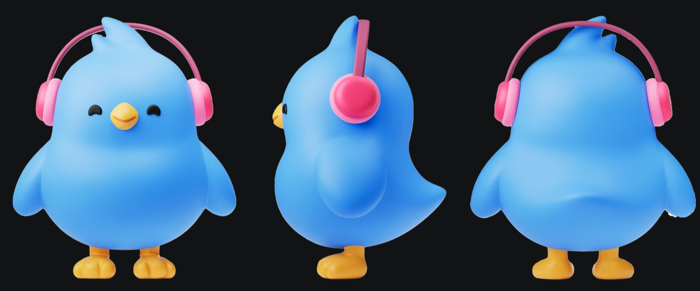

Lark Player IP
为面向南美市场的音乐播放器 Lark Player 升级品牌 IP 形象：在保留原有识别资产的同时，让小鸟角色更有亲和力、更有音乐感，也更容易延展到不同场景。


01 · 项目背景
让品牌拥有一个可被记住的角色
Lark Player 是一款主要面向南美市场的音乐播放器产品。为进一步提升品牌辨识度，建立与用户之间的情感连接，品牌希望通过 IP 形象塑造更具亲和力和记忆点的品牌人格，增强用户认同感与品牌粘性。

02 · 现有问题
原有形象难以支撑更多场景
梳理原有 IP 在周边、社媒内容和产品界面中的使用情况，归纳出三个需要解决的问题。
- 形象亲和力不足
- 场景表达受限
- 视觉体系不完善
03 · 设计策略
延续识别，重塑角色
针对原有 IP 在亲和力、情感表达及场景延展性上的不足，本次设计在保留既有品牌识别资产的基础上，对 IP 形象进行重新塑造。
#01延续品牌识别
为避免形象升级造成原有品牌认知的断层，保留已经建立的核心视觉特征：
- 圆形轮廓：延续原 IP 圆润、饱满的整体视觉印象
- 耳机元素：作为音乐产品属性与品牌身份的重要识别符号，予以保留
- 红蓝配色：延续原有品牌色彩体系，强化视觉识别的一致性

#02重塑角色特征
围绕「活力」与「音乐」两个核心关键词，重新探索 IP 的形象语言：设计双脚结构，让角色能跑、能跳、能随音乐摆动，在不同场景里都能自然地表达情绪。

04 · 造型探索
在两组维度之间寻找平衡
以「球状身体 — 二头身比例」和「表情表现力更强 — 表情表现克制」两组维度展开造型探索，比较不同身体比例与表情强度带来的角色气质。



#01选定与优化
与客户共同评审后，从 13 个探索方案中选定此方案，并在此基础上优化：
- 造型语言统一
- 调性平衡

05 · 定稿展示
定稿三视图
正、侧、背三个角度的 2D 平面与 3D 渲染，作为后续表情、周边与动态延展的统一基准。


新的小鸟形象延续了用户已经熟悉的轮廓、耳机和配色，同时拥有了更丰富的表情与动作，为 Lark Player 后续的周边、社媒内容和产品界面提供了一个统一、可延展的品牌角色。
Back to projects